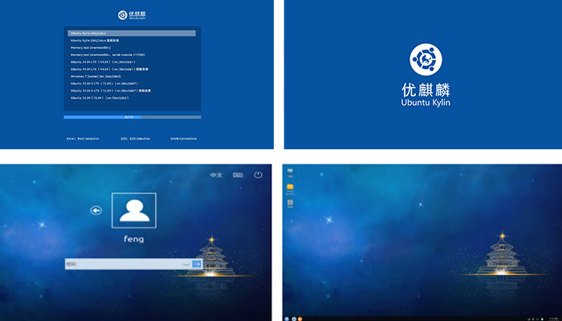
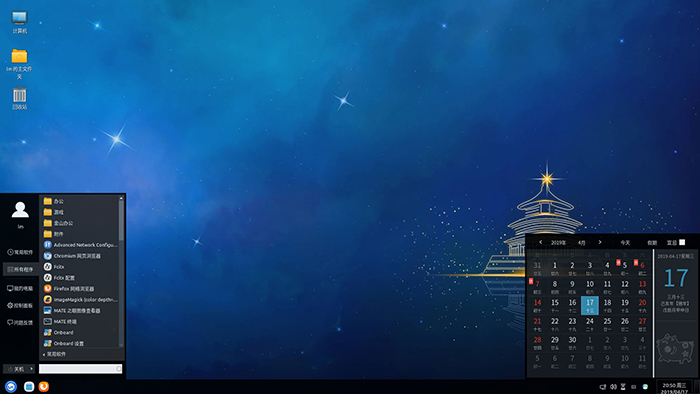
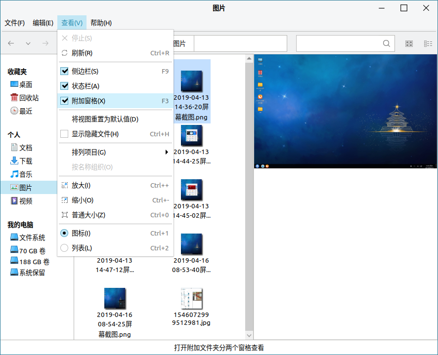
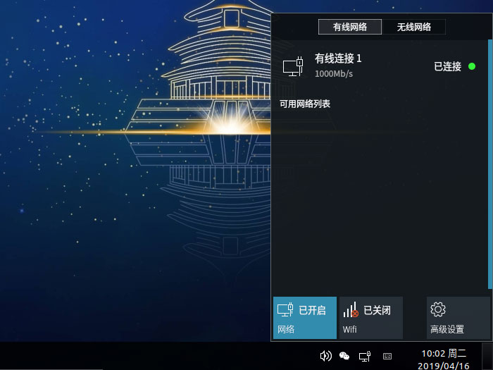

本次发布，带来了全新的视觉体验：从系统选择到开机动画，从登录程序到系统桌面，呈现流畅的一体式风格：

酷炫的透明效果：开始菜单、任务栏、通知区域都添加了透明设置，让您的桌面更有科技感：
优麒麟19.04正式版发布，激流勇进，精益求精！贴心的实用功能，简化您的日常操作：
a.开始菜单新增定时小程序

b.任务栏添加合并同类窗口功能

c.文件管理器添加预览功能
d.托盘添加简化的网络设置工具

最新的办公套件：新版WPS与搜狗输入法，给您最好的日常办公体验：

a.金山WPS
- 全新的新建页面，整合最近打开文档、本地模板、公文模板、在线模板等；
- 支持智能目录更新；
- 自动识别文档中的方框，支持打勾或取消打勾；
- 支持多种判断规则，实现智能填充；
- 支持单区域、多区域数据对比和提取；合并多个工作表或工作簿；
- 支持97种智能图形的插入和编辑 。

b.搜狗拼音输入法Linux版由UbuntuKylin团队与搜狗公司联合开发，具有智能拼音、自动匹配、多样化皮肤支持等功能，本次更新到2.3.0.0109版本，重磅推出五笔功能。
- 加入搜狗纯五笔功能；
- 实现了符号大全功能；
- 开发库从qt4切换到qt5。
在内核方面，本次升级到5.0版本，更新的主要特性包括：
- 支持AMD FreeSync显示；
- 支持 BTRFS 文件系统中的交换文件；
- 提供 Adiantum 文件系统加密功能；
- 增加ARM big.LITTLE CPU的电源管理改进功能；
- 支持显示HiDPI/retina新控制台字体；
- 支持Logitech高分辨率滚动。
在基础服务层，对生物特征识别框架以及相应的管理程序进行了升级，主要包括：
（1）生物识别框架
- 添加西班牙语支持；
- 重写CFB算法，移除对OpenSSL的依赖；
- 为二进制库添加bindnow链接flag；
- 将biometric-drivers.conf从confile中移除，使用模板文件替代；
- purge后删除遗留的配置文件；
- 新增APP_API的Enroll接口自动分配空闲索引功能；
- 修复Dbus相关错误的描述信息；
- 修复AES key文件任何人都可访问的安全bug；
- 修复biometric-auth-client工具未定义超时时间导致工具无法运行的bug；
- 修复biometric-auth-client工具查看驱动时，信息错误的bug。
（2）生物识别管理程序
- 修改为单例模式；
- 增加设备状态显示以及默认设备配置功能；
- 增加对usb设备热插拔的支持；
- 添加俄语、法语、葡萄牙语、西班牙语支持；
- 支持多用户同时启动；
- 根据设备信息实时更新特性列表；
- 修复设备状态不统一等bug。
在桌面环境方面，不仅添加了一系列的新功能，还修复了许多细微的bug，为用户提供更加舒适简洁的操作体验，主要的更新包括：
（1）登录程序/锁屏
- 更新了UI布局；
- 更新多国语言翻译；
- 当验证失败时自动重试；
- 修复获取屏幕分辨率失败等bug。
（2）开始菜单
- 新增透明度设置；
- 更新logo图标和默认头像；
- 新增定时关机功能；
- 优化最近打开文档功能；
- 新增俄语、法语、葡萄牙语、西班牙语支持；
- 支持实时切换主题；
- 优化特殊文件名处理；
- 修复连续点击开始菜单导致卡顿等bug。
（3）任务栏
- 新增窗口分类合并功能；
- 新增快速启动栏移动应用图标左右移动的功能；
- 应用列表占满时，支持动态留出空白区域；
- 新增通知区域图标隐藏显示功能；
- 支持实时切换主题；
- 更新多国语言翻译；
- 修复窗口列表偶尔消失等bug。
（4）通知区域
- 新增麒麟网络管理小程序，简化网络设置相关功能。
- 日历部分新增显示和隐藏宜忌功能；
- 支持实时主题切换。
（5）文件管理器
- 新增文件预览功能，用户在不打开WPS、Pluma、eom等软件的情况下，可直接预览文档、pdf、图片、视频等常用软件；
- 磁盘信息显示简化；
- 新增磁盘格式化功能；
- 优化拷贝文件时自命名规则；
- 更新多国语言翻译；
- 修复回收站恢复文件失败等bug。
（6）窗口管理器
- 支持窗口半屏最大化；
- 优化工作区切换过程动画；
- 修复浏览器下载时窗口无法弹出在最前等bug。
（7）控制面板
- 调整个性化设置中的内容；
- 支持所有版本的壁纸包；
- 更新默认头像背景；
- 完善时区的设置；
- 更新多国翻译；
- 修复快捷键设置失效等bug。
（8）其他
- 关机/注销页面添加键盘和快捷键支持；
- 更新主题部分图标和配色；
- 修改终端默认配置；
- 修复截图程序背景色错误等bug。
在特色应用方面，进行了全面的功能升级和bug修复，提升了稳定性和实用性，主要的更新包括：
（1）优麒麟软件中心
- 接口调整和代码优化；
- 更新广告接口和Win接口；
- 新增软件的屏幕截图和图标。
（2）优客助手
修复设置自启动应用失败、清理时卡住、文件粉碎机中不能打开家目录等bug。
（3）麒麟影音
- 添加多处鼠标快捷操作支持；
- 更新多国语言翻译；
- 为mpv添加OSD功能；
- 优化mpv和mplayer部分参数；
- 增加获取媒体文件信息的线程；
- 优化媒体文件列表。
（4）优客天气
- 添加设置窗口动画效果；
- 修改窗口显示逻辑；
- 更新多国语言翻译；
- 修复鼠标左键点击无法弹出等bug。